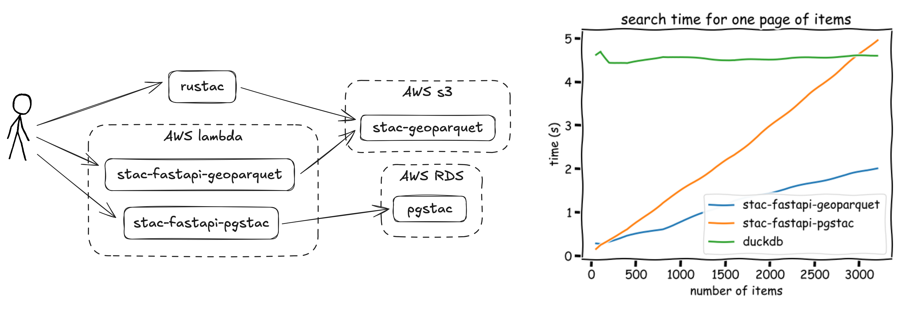
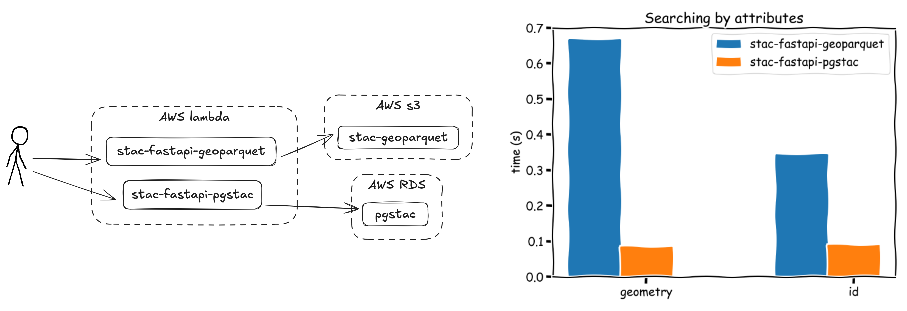
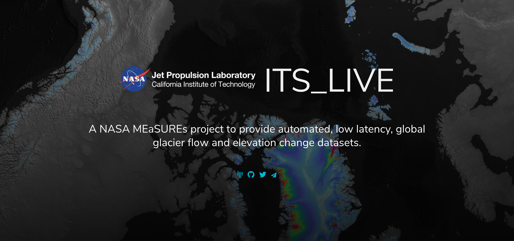

Cloud-Native Geospatial Metadata with stac-geoparquet
a.k.a. "Pragmatic STAC"

Pete Gadomski
A brief STAC history
SpatioTemporal Asset Catalog (STAC)
---
config:
theme: neutral
look: handdrawn
---
timeline
2017 : Initial commit to what became the stac-spec repository
: Sprint 1 (Boulder)
: v0.1.0
2018 : Name changed to STAC
: Sprints 2 (Ft. Collins) and 3 (Menlo Park)
: v0.4.0 to v0.6.0
2019 : Sprint 4 and 5 (Arlington)
: v0.7.0 to v0.8.0
2020 : Sprint 6 (Virtual)
: v0.9.0
2021 : v1.0.0
2023 : Sprint 7 (Philadelphia)
: API v1.0.0
2024 : v1.1.0
2025 : Sprint 8 (Italy)
: OGC Community Standard
Cribbed heavily from https://element84.com/geospatial/stac-a-retrospective-part-1/
What the STAC?

STAC is the map to your data.
— Howard Butler
STAC entities

Modes of STAC

Uses of STAC

Based on commonly-used, open source projects such as stac-fastapi
Uses of STAC: search
I need all Landsat images with cloud cover less than 20% over Summit County, Colorado in 2025 for a snow distribution research project
| Mode | Explanation | Rating |
|---|---|---|
| Static | Read every blob | ❌ |
| API | Indexes | ✅ |
Uses of STAC: full scan
I need every NAIP image to train a model.
| Mode | Explanation | Rating |
|---|---|---|
| Static | Read every blob | ⚠️ |
| API | Throttling, intermittent errors | ⚠️ |
Uses of STAC: ingest
I need to update my data store each day with a new analytic product
| Mode | Explanation | Rating |
|---|---|---|
| Static | Add one file, modify another | ✅ |
| API | Usually bespoke and complex | ⚠️ |
Uses of STAC: near real-time
I need to be notified as soon as a new weather forecast is available, so I can update my market model
| Mode | Explanation | Rating |
|---|---|---|
| Static | Out-of-the-box (sometimes) | ⚠️ |
| API | Polling | ❌ |
Modes and uses
| Use | Static | API |
|---|---|---|
| Search | ❌ | ✅ |
| Full scan | ⚠️ | ⚠️ |
| Ingest | ✅ | ⚠️ |
| Near realtime | ⚠️ | ❌ |
| Cost and complexity | ✅ | ⚠️ |

Cloud-native geospatial metadata

stac-geoparquet specification

Initial commit May 2022 by Tom Augspurger
Uses of STAC: full scan

Data are useful at rest

$ rustac search \
https://raw.githubusercontent.com/developmentseed/labs-375-stac-geoparquet-backend/refs/heads/main/data/naip.parquet \
--intersects='{"type":"Point","coordinates":[-105.1019,40.1672]}'
No geospatial moats

D select max(datetime), min(datetime) from 'naip.parquet';
┌──────────────────────────┬──────────────────────────┐
│ max(datetime) │ min(datetime) │
│ timestamp with time zone │ timestamp with time zone │
├──────────────────────────┼──────────────────────────┤
│ 2022-08-27 10:00:00-06 │ 2019-09-18 18:00:00-06 │
└──────────────────────────┴──────────────────────────┘
Data are smaller

| Format | Size |
|---|---|
| json | 21 MB |
| json.gz | 614 kB |
| parquet | 488 kB |
| parquet (compressed) | 179 kB |
1000 sentinel-2 items
Major downside: inflexible schema
Workarounds:
- DuckDB's union_by_name
- The new variant type
- Just re-write it
Experiments
🧑🔬
- stac-fastapi-geoparquet
- ITS_LIVE
stac-fastapi-geoparquet

-
Three collections
- 10k items from NAIP
- 2.2M items from Sentinel 2 L2A
- 14k items from OpenAerialMap
-
Two backends
- stac-fastapi-pgstac
- stac-fastapi-geoparquet
- Battery of tests
- Cost tracking
https://github.com/developmentseed/labs-375-stac-geoparquet-backend/
stac-fastapi-geoparquet full-scan

https://github.com/developmentseed/labs-375-stac-geoparquet-backend/
stac-fastapi-geoparquet search

https://github.com/developmentseed/labs-375-stac-geoparquet-backend/
ITS_LIVE

- 10M items as 29GB of JSON in AWS s3
- Heterogeneous spatial distribution
- Full-scan (or at least bulk) requests
ITS_LIVE
Searching by id ten million items is reduced from 187s to 3s by partitioning and sorting
For more on spatial partitioning, see Enabling Cryo Science at Scale: How ITS_LIVE is Providing a Serverless Analysis Ready Archive of the Future by Joe Kennedy, Luis López, et al

https://www.gadom.ski/posts/stac-geoparquet-organization/
https://stac-utils.github.io/rustac-py/latest/notebooks/its-live/
Large-scale on source.coop

The rise of the machines
Large, statically hosted datasets that rich text descriptions can be quite useful when fed to a robot.

By https://eleven.com.au/futurama-characters.html, Fair use, Link
{kind=link}
Updated modes and uses
| Use | Static | API | stac-geoparquet |
|---|---|---|---|
| Search | ❌ | ✅ | ⚠️ |
| Full scan | ⚠️ | ⚠️ | ✅ |
| Ingest | ✅ | ⚠️ | ⚠️ |
| Near realtime | ⚠️ | ❌ | ⚠️ |
| Cost and complexity | ✅ | ⚠️ | ✅ |
| Maturity | ✅ | ✅ | ⚠️ |
Tooling
| Name | Description |
|---|---|
| stac-utils/stac-geoparquet | Original reference implementation, streaming, snapshotting pgstac, Delta Lake |
| stac-utils/rustac | Lower-level, Python and CLI, async, STAC search directly on stac-geoparquet files |
| stac-utils/stac-fastapi-geoparquet | Search and discovery for stac-geoparquet files through an HTTP API (experimental) |
| DuckDB | Reading, querying, and re-partitioning |
| GeoPandas | You know it, you love it |
stac-map

Visualize stac-geoparquet in your browser, uses Deck.gl and DuckDB.
stac-map

Download search results as stac-geoparquet, and upload stac-geoparquet from your local filesystem into your browser.
Software ecosystem


Next steps

Extract the spec

https://radiantearth.github.io/stac-geoparquet-spec
https://github.com/radiantearth/stac-geoparquet-spec
More examples and documentation!

TODO @gadomski patterns and recipes for sorting and partitioning
Push to v1
⛵︎
Open questions around a "catch-all" properties column, how we handle assets, and more.
Head on over to the repo's issues to weigh in!
Cloud-Native Geospatial Metadata with stac-geoparquet
a.k.a. "Pragmatic STAC"
https://www.gadom.ski/presentations/2025-11-04-stac-geoparquet.html